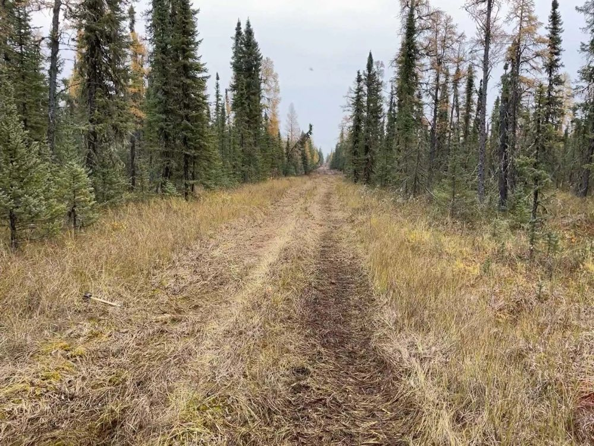
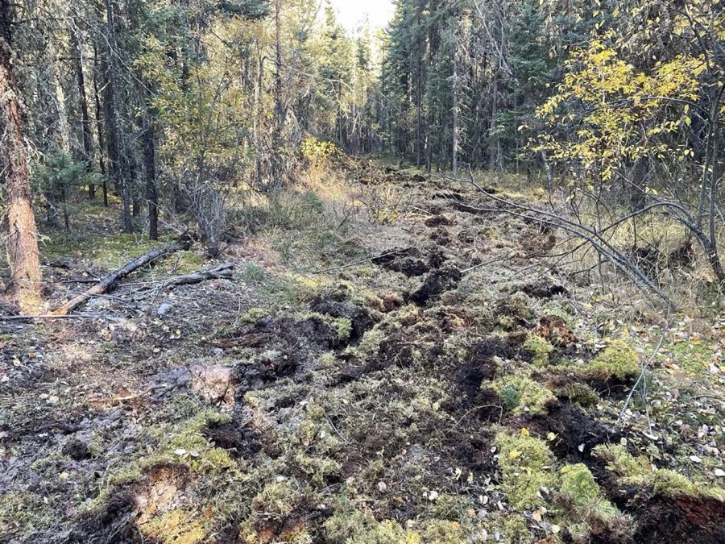
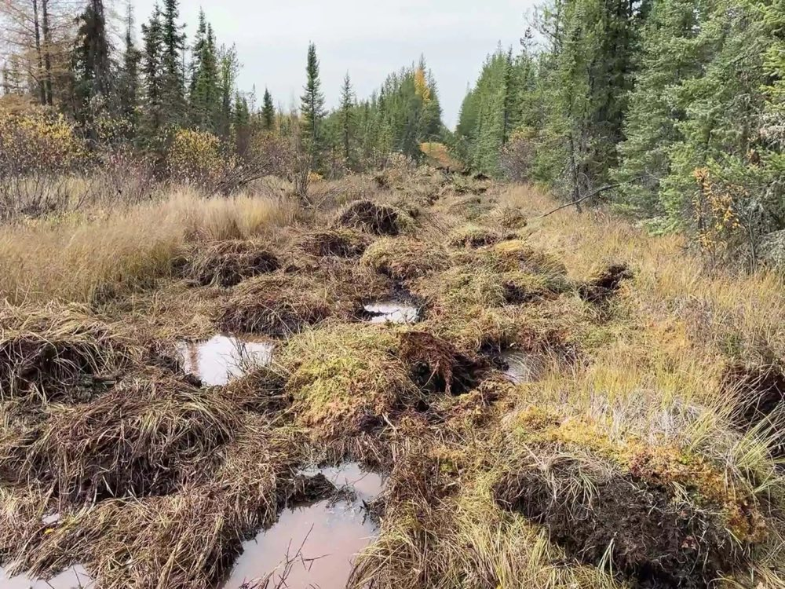
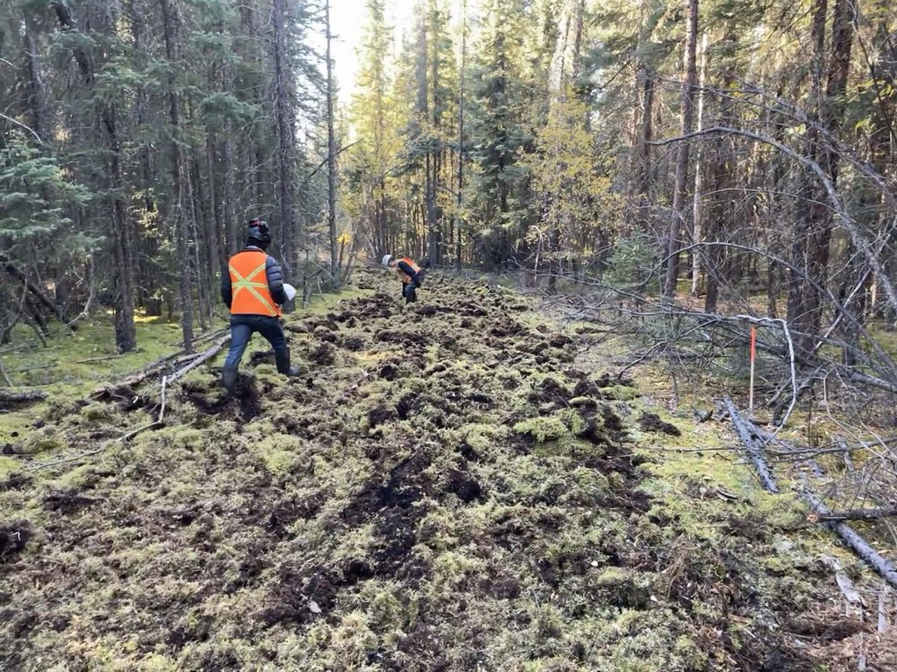
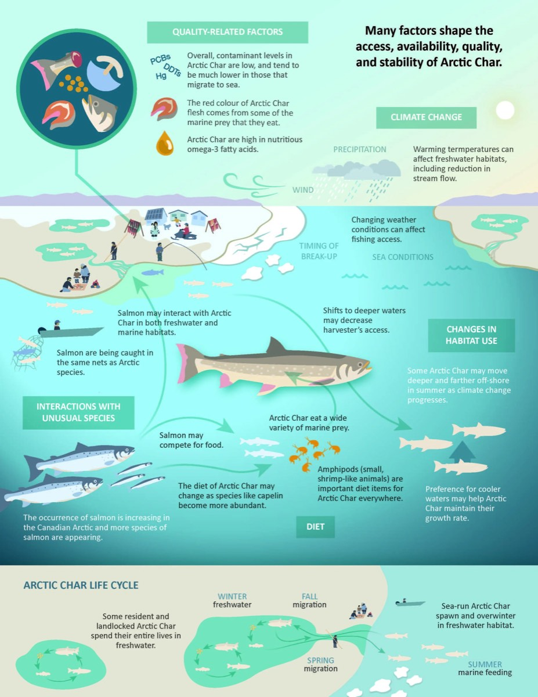
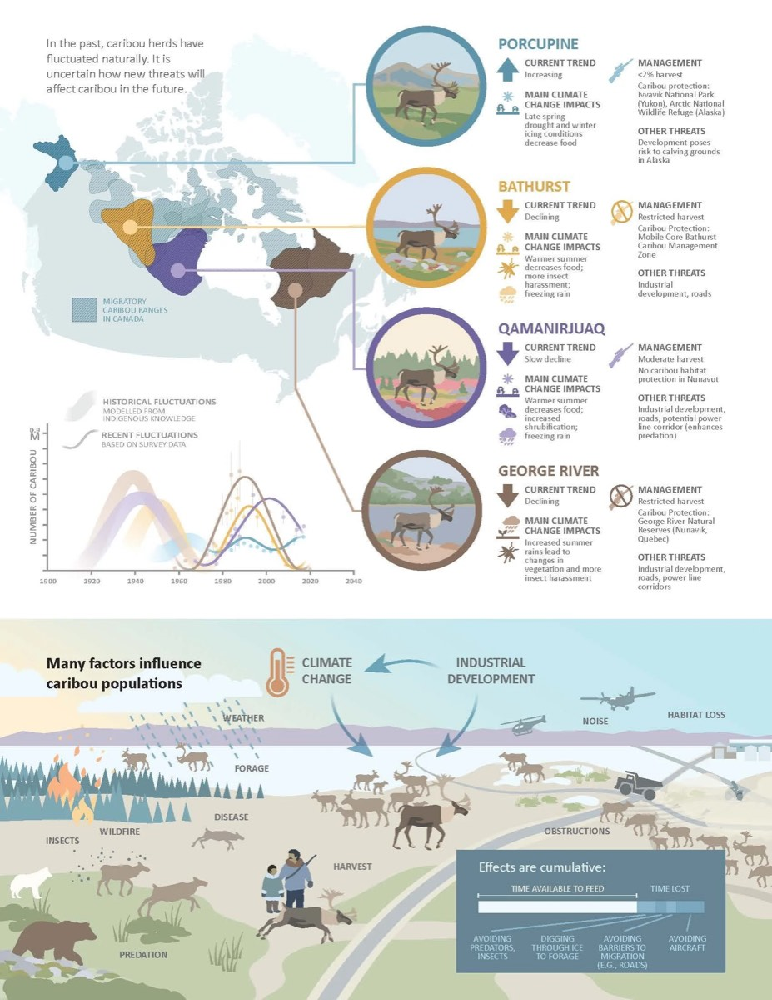
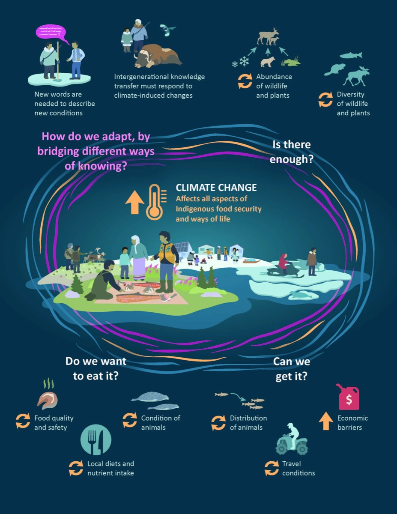
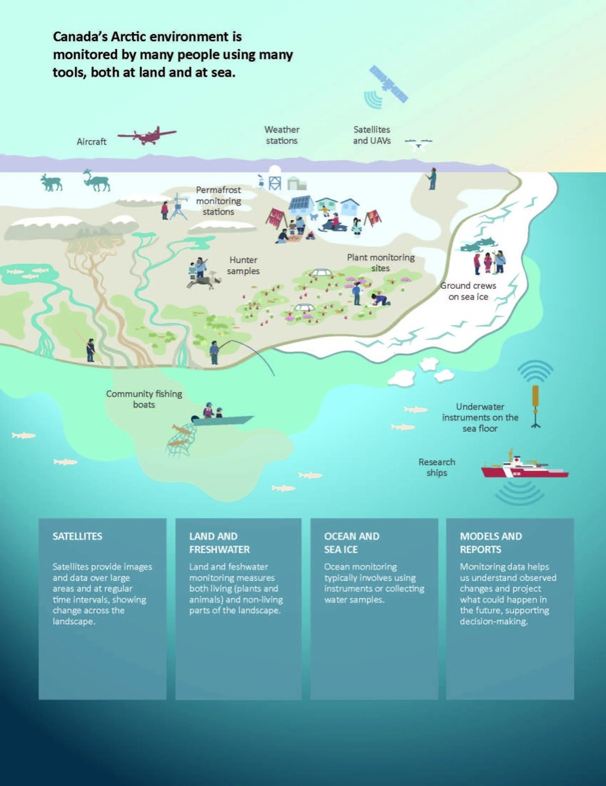
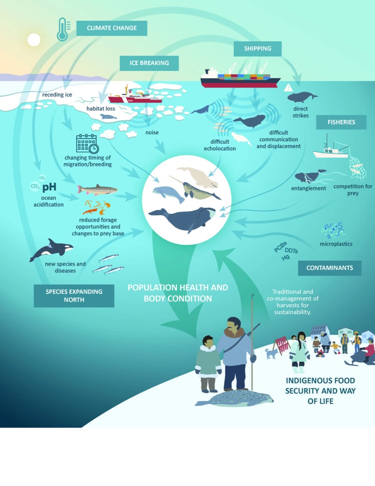

Quand je dis aux gens que je travaille en communication scientifique, on me répond généralement : « D’accord… mais qu’est-ce que vous faites, concrètement ? »
La réponse, dans sa forme la plus simple, c’est : « Beaucoup de choses ! » Au cours des huit années écoulées depuis que Matthew et Shelagh Pyper ont fondé Fuse Consulting Ltd., l’offre de l’entreprise s’est considérablement élargie. Chaque facette du travail de Fuse repose sur la même mission : donner vie au savoir et permettre aux leaders de prendre des décisions qui comptent.
Nous aidons nos clients à rejoindre des publics très variés, en partageant de l’information qui porte le plus souvent sur l’environnement et sa gestion. Notre objectif central est d’aider nos clients à formuler leur information avec plus d’impact, afin qu’ils puissent lever les obstacles et remporter de grandes victoires grâce à leur travail.
Nos produits prennent des formes très diverses, et nous combinons souvent plusieurs approches au sein d’un même projet. Nous pouvons animer un atelier complexe pour appuyer l’établissement de partenariats, produire pour le gouvernement des notes d’information ou des rapports spéciaux enrichis de visuels, concevoir des infographies pour un chercheur, réaliser des panneaux d’interprétation pour des organisations non gouvernementales de l’environnement (ONGE), et plus encore.
Il y a tant à vous raconter sur ce que nous faisons et sur les raisons qui nous animent. Pour l’instant, je vous invite à parcourir trois projets récents, pour découvrir une partie du travail auquel nous avons eu l’honneur de participer ces dernières années.
Stimuler l’innovation dans la restauration de l’habitat du caribou
Nous sommes en 2016. Matthew Pyper, cofondateur de Fuse, se tient devant un tableau blanc couvert de papillons adhésifs et de notes griffonnées à la hâte. Il travaille sur un projet sans client et sans financement. D’un côté du tableau, il a inscrit « Savoir existant » ; de l’autre, « Ce qui pourrait être ». Les notes sur la restauration des lignes sismiques — ce qui a été tenté, ce qui ne l’a pas été, qui pourrait s’en charger et qui pourrait en bénéficier — s’accumulent à mesure qu’il franchit la première étape de ce qui allait devenir son projet le plus ambitieux à ce jour : la feuille de route pour l’innovation en restauration des éléments linéaires.
Et si l’on pouvait restaurer les éléments linéaires pour une fraction du coût par kilomètre, tout en obtenant des résultats écologiques équivalents ou meilleurs ? C’était la question au cœur de l’idée de feuille de route pour l’innovation de Matthew. La restauration des éléments linéaires était un volet clé du plan de conservation du caribou de l’Alberta, mais son coût était presque prohibitif. Il savait qu’en mettant à profit sa connaissance des techniques forestières pour tester différentes méthodes, il pourrait obtenir des avancées technologiques qui rendraient possible une restauration rapide des éléments linéaires. Il lui fallait simplement un partenaire — doté de machinerie, d’opérateurs et d’un objectif commun — capable de concrétiser ces essais. Matthew a présenté son idée à un groupe de collègues de l’industrie au sein de Canada’s Oil Sands Innovation Alliance (COSIA) et, lorsqu’un financement s’est libéré, ses griffonnages au tableau blanc sont soudain devenus réalité.
« ... nous voyions cela comme une feuille de route sur dix ans — franchement, beaucoup de ces idées relevaient du rêve — et environ un an et demi après avoir produit [une revue de littérature], nous participions à un essai qui mettait réellement à l’épreuve, sur le terrain, bon nombre de ces techniques avec Cenovus. »
Où en est ce projet aujourd’hui ? Matthew et ses collaborateurs ont terminé leur deuxième saison de terrain, après avoir testé 13 types d’équipement pour créer des microsites le long des lignes sismiques. Leurs résultats préliminaires sont extrêmement prometteurs, et nous avons hâte de les faire connaître une fois l’analyse terminée !




Tisser des liens pour atteindre de nouveaux sommets
Nous sommes en 2016. Shelagh Pyper, cofondatrice de Fuse, s’apprête à ouvrir une réunion préparée depuis des mois. Elle prend une grande inspiration en s’avançant devant le groupe réuni, dont une partie participe en personne et une autre à distance depuis Ottawa. Avec son équipe, elle a réussi à rassembler des représentants du gouvernement, d’organisations non gouvernementales de l’environnement (ONGE), de l’industrie et de la recherche pour discuter et définir le type de portail de ressources en ligne dont eux-mêmes et leurs parties prenantes avaient besoin, ainsi que la forme que prendrait un partenariat de collaboration pour développer cet outil.
Les domaines de la conservation et de la gestion des terres sont essentiels au Canada, et les ressources scientifiques abondent, tant pour les praticiens que pour les décideurs. Ces documents ne sont toutefois utiles que si on parvient à les trouver. Plus Shelagh et son équipe étudiaient les portails de ressources en ligne existants, plus il devenait évident que des fonctions de recherche difficiles à utiliser et un financement imprévisible avaient fait disparaître, dans les faits, de bonnes ressources — et les portails qui les hébergeaient.
Shelagh voyait aussi clairement que des organisations ressentaient le même besoin et souhaitaient agir. Avec son équipe, elle a mis à profit son réseau pour réunir des représentants du gouvernement fédéral, d’une ONGE nationale, d’organismes de recherche et de l’industrie afin de définir ensemble le type de produit sur lequel ils pourraient s’entendre — ce qui n’était pas une mince affaire ! De ce travail interdisciplinaire, mené d’un bout à l’autre du pays, est né le Canadian Conservation and Land Management (CCLM) Knowledge Network, dirigé par cinq collaborateurs : Ducks Unlimited Canada, Environnement et Changement climatique Canada, InnoTech Alberta, le National Boreal Caribou Knowledge Consortium, le Service canadien des forêts et le NAIT Centre for Boreal Research.
« Au début, nous étions comme un pont, qui cherchait simplement à relier deux choses, deux groupes… Aujourd’hui, avec des projets comme le CCLM, nous ressemblons davantage à un aéroport relié au monde entier : nous sommes le courtier de connaissances qui permet aux gens de trouver de nouveaux partenaires, de nouvelles informations et le savoir dont ils ont besoin. »
Où en est ce projet aujourd’hui ? Au cours du dernier trimestre, le portail CCLM — créé et entretenu par un partenariat réunissant plusieurs organisations — a accueilli plus de 4 000 nouveaux utilisateurs et près de 7 000 sessions. Les utilisateurs ont téléchargé des documents allant d’avis de chasse en Colombie-Britannique à un guide sur la collaboration interculturelle. Les partenaires du CCLM continuent de se réunir régulièrement pour faire avancer leurs objectifs communs, avec le soutien de Fuse en gestion de projet.
Voir la vidéoPrésentation du portail de connaissances du CCLM, sur YouTube
Vidéo de présentation et d’utilisation du portail de connaissances du CCLM (YouTube).
Donner vie à la recherche polaire pour les habitants du Nord
Faisons un bond jusqu’en mars 2020. Un air froid et sec accueille Kate Broadley (aujourd’hui directrice de la mobilisation de la recherche) lorsqu’elle descend de l’avion sur le sol dur de Cambridge Bay, au Nunavut. Elle est là à la demande de Savoir polaire Canada pour s’asseoir, écouter et, au bout du compte, synthétiser les résultats d’un atelier de planification réunissant des chercheurs et des détenteurs du savoir autochtone. Tout ce travail constitue une étape importante vers un futur forum d’échange des connaissances, qui doit réunir détenteurs du savoir autochtone, chercheurs et décideurs pour qu’ils tissent des liens et discutent des sujets qui les préoccupent le plus.
Ce premier travail avec Savoir polaire Canada a marqué le début d’un projet en plusieurs étapes qui a poussé Kate à se dépasser sur le plan créatif et lui a permis de mieux comprendre les enjeux interreliés auxquels font face les habitants du Nord. En 2021, Savoir polaire Canada a réuni des équipes d’experts chargées de rédiger des articles répondant aux questions clés cernées lors de l’atelier de planification. Kate a eu pour mandat de concevoir des infographies pour aider les chercheurs à communiquer plus efficacement. Un aspect crucial de ce projet consistait à s’assurer que les visuels représentaient les communautés et les cultures autochtones du Nord avec exactitude et respect, en plaçant leurs besoins et leurs intérêts au centre. Kate a travaillé en étroite collaboration avec Savoir polaire Canada et les groupes de travail d’experts, dans le cadre d’un processus adaptatif et très itératif — des apprentissages qu’elle a ensuite appliqués à de nombreux projets d’échange des connaissances.
Au bout du compte, ce projet visait à donner vie à l’information en gardant au premier plan le lien avec les habitants du Nord et leurs communautés. Les infographies qu’elle a produites sont accessibles sur le site Web du gouvernement du Canada en quatre langues ; elles offrent des représentations belles et réfléchies de la façon dont les écosystèmes arctiques et les modes de vie et de connaissance autochtones sont entrelacés.
« Le résultat final est un ensemble d’infographies qui vont très loin, à la fois pour communiquer de l’information scientifique et pour l’ancrer vraiment dans ces paysages et auprès des communautés, en intégrant différents types de valeurs et de préoccupations. Réunir tout cela a été une démarche vraiment formidable, et ces infographies sont maintenant accessibles en ligne en anglais, en français, en inuktitut et en inuinnaqtun. »





Et maintenant, où allons-nous ?
Après près d’une décennie d’activité, l’équipe de Fuse constate qu’il reste encore beaucoup à faire. L’innovation est au cœur de notre identité d’équipe, et nous explorons sans cesse de nouveaux territoires en communication scientifique. Par exemple, nous cherchons de nouvelles façons de tirer parti de la force des visuels grâce aux graphiques animés, et nous continuons d’élargir notre réseau de panneaux d’interprétation. Nous travaillons avec enthousiasme avec de nombreuses organisations partout au Canada pour bâtir de solides partenariats et mettre en valeur un savoir essentiel pour relever certains des défis les plus pressants du pays en matière de conservation et de gestion des terres. Qu’il s’agisse de conservation à l’échelle des lacs dans les Grands Lacs, d’aider des groupes de conservation locaux à rejoindre le public ou de gérer des partenariats complexes liés à la conservation du caribou et à la gestion des ressources naturelles, nous continuons de mener des projets qui réunissent des leaders d’opinion et repoussent les limites de ce que la communication scientifique peut accomplir.